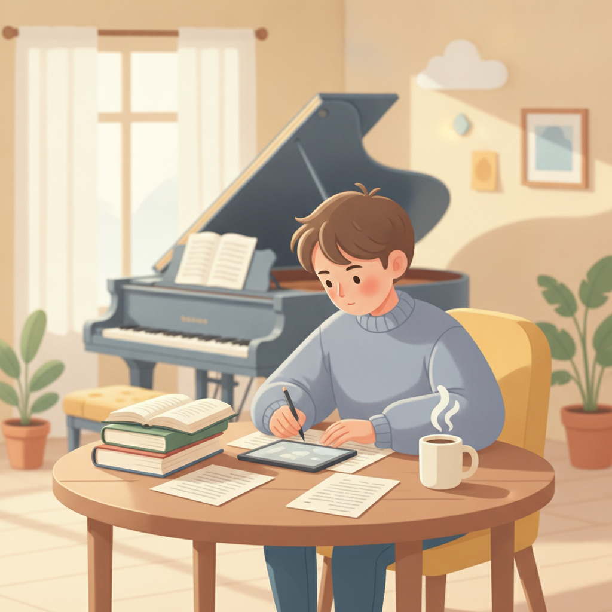
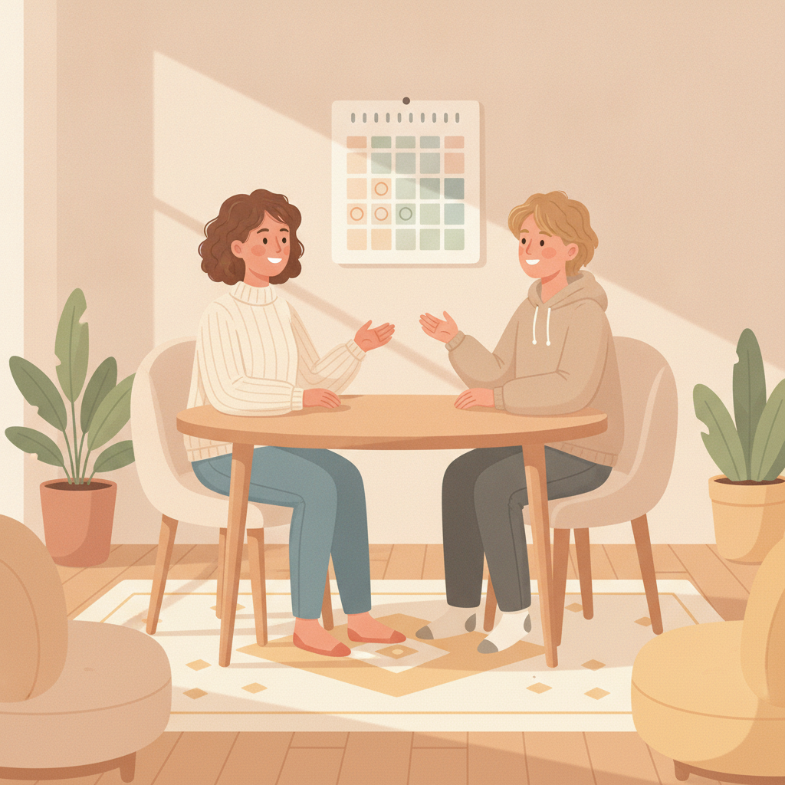
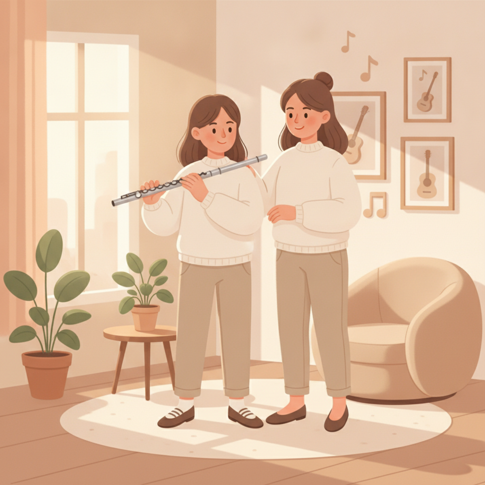

孩子要專心準備考試了，音樂課該先停嗎？
他喜歡音樂，這件事你很確定。你不確定的是，這一年還讓他學下去，會不會拖到成績。
先回答你最想問的那一題：真正吃掉時間的不是那一堂課，是通勤和每天的練習。要動，就從這兩個地方動。
所以我的建議是：別全停，改減量。停一年，掉的是手感，不是感情，但手感要花時間才追得回來，能省下這一段就省。
如果連你自己都說不出他到底愛不愛，那就先拼升學，沒關係——但停之前，先把回來的月份講定。

這個擔心，最後通常會變成一句很客氣的話：「老師，我們家可能下學期先停一下，等考完再回來。」這句話我每年都會聽到幾次。有人是國三下才開口，有人國二上就先來探口風，也有高二的家長為了學測問同一件事。
每一個都問得很不好意思。好像光是動這個念頭，就已經對不起孩子。
你會猶豫，就代表他是真的喜歡
先說一件事，讓你安心一點。
孩子如果真的沒興趣，你不會猶豫到現在。那種情況通常停得很乾脆——反正每次都要催，停了兩邊都輕鬆，不會拖，也不會特地上網查別人怎麼做。
你會卡住，是因為你心裡有畫面。可能是他寫作業之前會先去彈兩句，可能是他練到一半自己笑出來，也可能只是某一天他走出教室的時候，看起來比進去的時候輕。
那些畫面就是你捨不得的原因。
所以這一段我不打算給你什麼判斷表。他是什麼樣子，你比誰都清楚。接下來要談的不是「值不值得」，是「怎麼安排」。
能不全停，就別全停
停一年，到底會掉什麼？
手感一定會掉。長音撐不久、指法要想一下才下得去、視譜變慢，這些都會回來找你，需要一段時間慢慢追。但喜歡音樂這件事，不會因為停一年就生疏。真正讓孩子回不來的，從來不是那一年，是他本來就在硬撐。
所以我建議減量而不是全停，理由很務實：你省掉的是「重新追手感」那一段。時間表也不用重接，孩子在最喘不過氣的那幾個月裡，還留著一個不用被評分的地方。
後面我會講一個真的停了一整年的學生。她回來了。但那一年掉的東西，也是真的掉了。
那考試那段時間，課要怎麼上？
減量不是把課變短就算。這段時間，音樂課的任務要整個換掉——不是進步，是不要斷。任務換了，課的長相也要跟著換。
頻率先降。一週一次改成兩週一次，或一個月兩次——省下來的不只是那一小時，是連通勤在內的整個下午。那堂課也才會變成喘口氣的地方，不是又一個要準時到的行程。
不派新曲。這段時間不推進度，把已經彈熟的曲子拿出來玩，或是彈他自己喜歡的那首。他需要的是「我還會」，不是「我又多會了一點」。
作業盡量留在課堂上做完。回家零練習聽起來很不像話，但這一年就是這樣，硬派作業只會讓音樂課變成第五科。真的要留，就留十分鐘的量。
檢定和發表會都往後排。這兩件事需要集中的準備期，而準備期正好是這一年最缺的東西。
順帶一提，如果孩子在考試之前就已經很難坐到琴前，那要處理的可能不是考試，是練習本身的設計。這個我在孩子不肯練琴？幫他建立練琴習慣的 5 個方法那篇聊得比較細。
萬一你其實沒那麼確定
也有一種情況：孩子從小學一路學到現在，說不上喜歡，也說不上討厭，你自己都講不出他到底愛不愛。
那我不會勸你留下來。
一個本來就在硬撐的孩子，你再幫他保留這一小時，他不會覺得被珍惜，只會多一件事要應付。而你會因為「都幫你留了」而更難不生氣——課排了、錢繳了、車也接送了，他還是一副被押來的樣子。這種課上下去，對誰都不好。
停了不丟臉。音樂不會因為你停一年就不要你，這不是一班錯過就沒有的車。真的想回來，什麼時候都回得來。
我知道你可能已經在心裡準備好被老師勸留了。這篇不會。
不管走哪一條，先把「回來的日子」講定
「先把書讀好，音樂以後再說。」這句話沒有錯。錯的是「以後」沒有日期。
我看過的情況大概是這樣：停課的時候大家都說等考完，但考完之後有暑假、有新學校、有新的補習班，等到想起來已經是隔年。不是誰反悔，是那個「以後」從一開始就沒有寫在任何地方。
所以停課之前，先把復課的月份講出來，寫進行事曆，讓孩子也在場聽到。跟老師講一聲更好——被人記著的約定，比自己記著的容易兌現。
還有一件事：停課期間，留一件最小的事別讓它斷。一週摸琴十分鐘也好，通勤的時候聽他喜歡的那幾首也好。小到不構成負擔就對了。那不是練習，是留一條回來的路。

高中要考學測，也是一樣的建議嗎？
原則一樣，決定權不一樣。
國中那一年，時間表多半還在你手上；到了高中，孩子自己會決定要留什麼、砍什麼。你的角色也跟著換——從安排，變成不擋。
如果他自己說想留著，那就別去砍它。這個年紀的孩子願意在最忙的時候留下一件事，代表那件事真的在替他撐住什麼。反過來，如果他自己決定要停，也別替他惋惜，更別說「當初學那麼久很可惜」。那句話只會讓他之後更難開口說想回來。
考完之後，回來的第一堂課
我有一個長笛學生，妮妮。
她那一年是真的停了。專心準備考試，整整一年沒進教室。考完之後，成績都還沒放榜，她就傳訊息來問我下次上課可以約什麼時候。沒等放榜。
第一堂課，她自己先承認：老師，我好多手感都忘記了。
確實忘了。吹起來會抖，長音撐不久，指法要想一下才下得去。但那些東西，練回來只是時間問題。
真正沒有生疏的，是她喜歡音樂這件事。
所以如果你擔心的是「停這麼久，回來會不會很尷尬」——不會。尷尬的只有第一堂課的前十分鐘，而且通常是家長比較尷尬，孩子早就在吹了。
減量還是先停，這題沒有一體適用的答案，得看你家孩子現在的樣子。不確定的話，用 Line 跟我說說他的狀況，我們一起把這一年安排出來。

常見問題
孩子說喜歡音樂課，但每次練琴都要催，這樣還算喜歡嗎？
算。喜歡音樂和願意練習本來就是兩件事，大人也一樣——喜歡跑步不代表願意早起。要看的是他上課那天的心情，還有沒人叫的時候他會不會自己碰琴。如果課堂上他是放鬆的、有反應的，那他就是真的喜歡，卡住的只是練習的設計。
停一年再回來，還接得上嗎？
接得上。手感一定會掉，長音撐不久、指法要想一下，這都是正常的，需要一段時間慢慢追回來。但喜歡音樂這件事，不會因為停一年就生疏。真正接不回來的，多半是本來就在硬撐的孩子，那跟停多久沒有關係。
國二就要開始減課了嗎？
通常不用。國二的壓力多半是家長先感覺到的，孩子自己還沒到臨界點。與其提早一年降頻，不如先觀察他的狀態，等到真的開始撐不住再調整。太早減量的風險是，那個「暫停」會提早變成習慣。
考試期間還要考檢定嗎？
我會建議先不要。檢定是階段性的目標，不是必須品，而它需要一段集中的準備期——那正好是這一年最缺的東西。把檢定往後排到考完，不會有任何損失。
快速重點
- 你會猶豫，多半就代表孩子是真的喜歡——沒興趣的孩子，家長停得很乾脆。
- 能不全停就別全停，改減量——掉的是手感，不是感情。
- 考試期間的課：降頻、不派新曲、作業留在課堂做完、檢定往後排，任務是不要斷，不是進步。
- 連你自己都說不出他愛不愛，那就先拼升學，硬留下來對誰都不好。
- 決定要停，就把復課的月份先講定；沒有日期的「以後」，通常不會來。